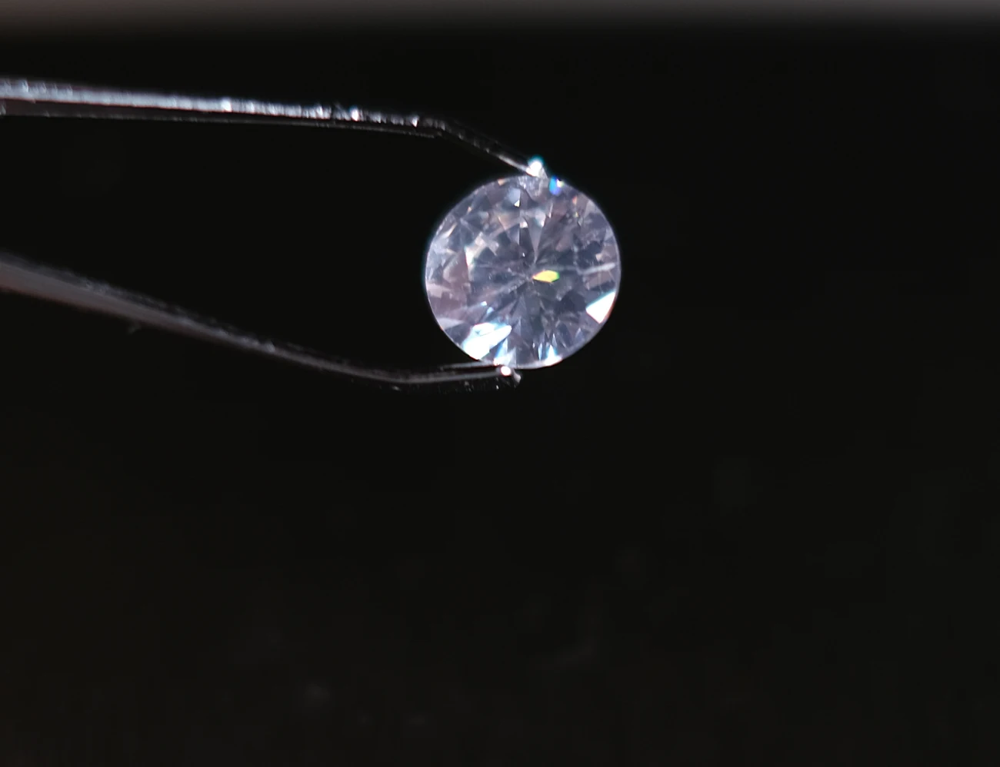
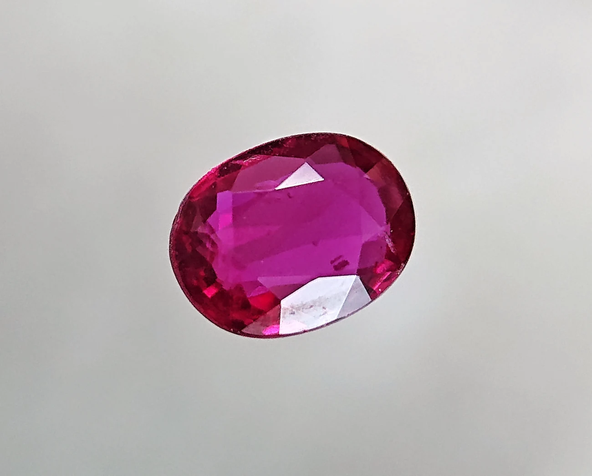

Schmuckwissen
Edelsteinatlas
Wie viel Farbe liegt zwischen D und J? Die Tafeln erklären die vier Cs des Diamanten – Farbe, Reinheit, Karatgewicht und Schliff – und zeigen Rubin, Saphir und Smaragd im Vergleich.
Die Farbskala D–Z
Beim Diamanten reicht die Skala von farblos bis leicht getönt. Hier lässt sich eine gelbliche Tönung über alle 23 Grade verfolgen.
| D | E | F |
|---|---|---|
| G | H | I | J |
|---|---|---|---|
| K | L | M |
|---|---|---|
| N | O | P | Q | R |
|---|---|---|---|---|
| S | T | U | V | W | X | Y | Z |
|---|---|---|---|---|---|---|---|
Die Töne am Bildschirm dienen der Orientierung. Im Labor wird der Diamant unter festgelegtem Licht mit Vergleichssteinen beurteilt. Auch bräunliche Tönungen kommen auf der D–Z-Skala vor.
Reinheit unter der Lupe
Wählen Sie zwei Reinheitsgrade für den Vergleich. Die vergrößerten Schemata zeigen, wie unterschiedlich innere und äußere Merkmale aussehen können.
Winzige Einschlüsse sind für geübte Augen bei 10× äußerst schwer zu entdecken.
Die Einschlüsse fallen bei 10× deutlicher auf als bei SI1.
Die Zeichnungen zeigen stilisierte Beispiele. Rot markiert innere, Grün äußere Merkmale. Für den tatsächlichen Grad zählen Größe, Art, Lage, Anzahl und Sichtbarkeit zusammen.
| Grad | Lupenbild | Bezeichnung | Befund bei 10× |
|---|---|---|---|
| FL | Flawless | FlawlessInnen und außen sind bei zehnfacher Vergrößerung keine Reinheitsmerkmale sichtbar. | |
| IF | Internally Flawless | Internally FlawlessDas Innere erscheint bei 10× frei von Einschlüssen. Kleine äußere Merkmale sind möglich. | |
| VVS1 | Very, Very Slightly Included | Very, Very Slightly IncludedWinzige Einschlüsse sind für geübte Augen bei 10× äußerst schwer zu entdecken. | |
| VVS2 | Very, Very Slightly Included | Very, Very Slightly IncludedSehr kleine Einschlüsse sind bei 10× noch immer sehr schwer zu finden. | |
| VS1 | Very Slightly Included | Very Slightly IncludedKleine Einschlüsse lassen sich bei 10× mit Mühe finden. | |
| VS2 | Very Slightly Included | Very Slightly IncludedKleine Einschlüsse fallen bei 10× etwas leichter auf. | |
| SI1 | Slightly Included | Slightly IncludedEinschlüsse sind für geübte Augen bei 10× gut erkennbar. | |
| SI2 | Slightly Included | Slightly IncludedDie Einschlüsse fallen bei 10× deutlicher auf als bei SI1. | |
| I1 | Included | IncludedBei 10× sind die Einschlüsse offensichtlich. Sie können die Brillanz beeinträchtigen. | |
| I2 | Included | IncludedDeutliche Einschlüsse können die Transparenz und den Lichteindruck stärker prägen. | |
| I3 | Included | IncludedAusgeprägte Einschlüsse können Transparenz, Brillanz oder Haltbarkeit erheblich beeinträchtigen. |
Das Gewicht in Karat
Ein metrisches Karat entspricht 0,20 Gramm. Zwei gleich schwere Steine können von oben unterschiedlich groß wirken.
Alle Gewichte lassen sich seitlich durchsehen.
| Gewicht | 0,25 ct | 0,50 ct | 0,75 ct | 1,00 ct | 1,50 ct | 2,00 ct |
|---|---|---|---|---|---|---|
| Ansicht | ||||||
| Gramm | 0,05 g | 0,10 g | 0,15 g | 0,20 g | 0,30 g | 0,40 g |
Die Zeichnungen zeigen relative Größen bei gleicher Form und gleichen Proportionen. Der tatsächliche Durchmesser hängt vom Schliff ab.
Was der Schliff ausmacht
Die Form beschreibt den Umriss eines Steins. Beim runden Brillanten bestimmen Proportionen, Facetten und Ausführung, wie er Licht zurückwirft und beim Bewegen aufblitzt.
Für den klassischen runden Brillanten im D–Z-Farbbereich verwendet GIA fünf Schliffgrade.
- Excellent
- Very Good
- Good
- Fair
- Poor

Fancy Color
Farbdiamanten werden nach Farbton, Helligkeit und Sättigung beschrieben. Bei Gelb und Braun beginnt dieser Bereich jenseits von Z. Andere Farbtöne können schon in zarter Ausprägung dazugehören.
- Gelb
- Braun
- Rosa
- Blau
- Grün
Die fünf Farbfamilien sind schematisch dargestellt. Ob die Farbe natürlich entstanden ist, lässt sich bei einem Stein im Labor untersuchen.
Die Farbedelsteine
Bei Rubin, Saphir und Smaragd lohnt sich der Blick auf Farbe, Transparenz und Behandlung. Ein Einschluss wirkt bei jeder Steinart anders.
Für den Vergleich aller drei Steine seitlich wischen.
| Merkmal | Rubin | Saphir | Smaragd |
|---|---|---|---|
| Fotografie |  |  |  |
| Mineral | Korund | Korund | Beryll |
| Farbe | Rot, teils mit violettem Nebenton. | Typisch ist Blau. Es gibt auch gelbe, rosa und weitere Farbvarietäten. | Grün bis bläulich grün. Sättigung und gleichmäßige Verteilung prägen den Eindruck. |
| Blick durch die Lupe | Feine Rutilnadeln können als „Seide“ erscheinen. | Feine Nadeln und Farbzonen können sichtbar sein. | Häufig sichtbare Einschlüsse und Rissstrukturen. Das Geflecht wird auch „Jardin“ genannt. |
| Behandlung | Erhitzen kommt vor. Rissfüllungen können die Haltbarkeit beeinflussen. | Erhitzen ist verbreitet. Ein Labor kann nach Hinweisen auf Behandlungen suchen. | Öle oder Harze können Risse füllen und ihre Sichtbarkeit mindern. |

Ein Laborbericht kann Steinart, natürliche oder synthetische Entstehung und erkennbare Behandlungen dokumentieren. Die Fotografien lassen sich einzeln öffnen.